C1 — Upload a sketch onto an Arduino
C1 — Upload a sketch onto an Arduino

What are we doing in this tutorial, sir?
I’m going to show you how to put a program onto an Arduino. We call an Arduino program a “Sketch”.

Start the Arduino IDE
First we start the Arduino IDE. There are two ways to do this.
One way is to click the “Windows” button at the bottom left of your screen, and find “Arduino” in the list.
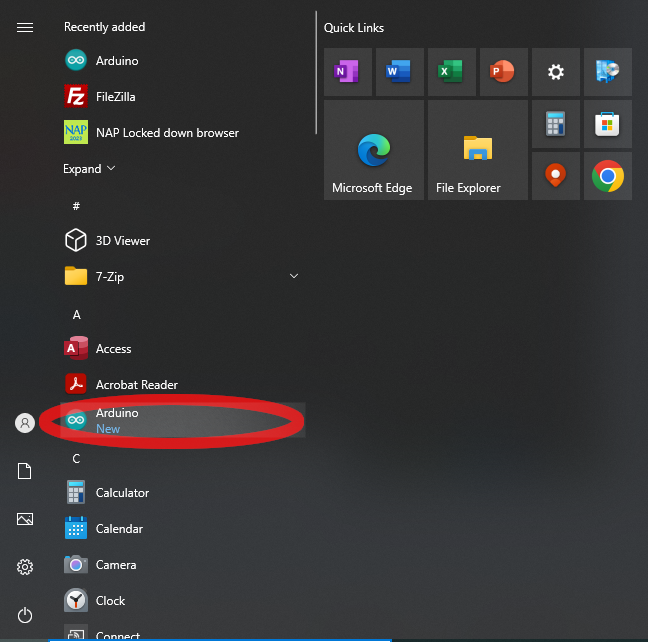
Another way is to type “arduino” into the search box at the bottom left of your screen, and find the Arduino app in the list.”
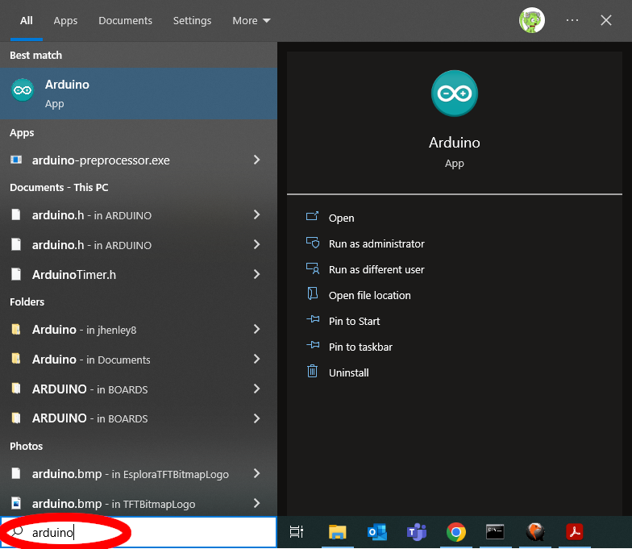
When you’ve started the Arduino IDE, you’ll see the window shown here.
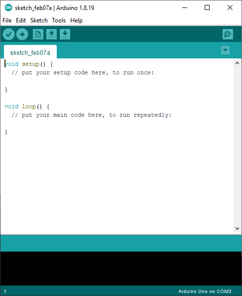
Put a sketch into the Arduino IDE
Go back to your Arduino window and select the whole sketch.
You can do this quickly by typing Control-A.
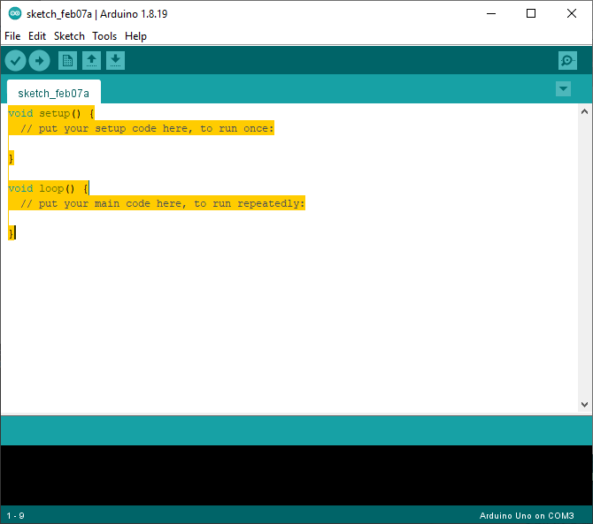
Now you’ll need to put a sketch into this window. I have the sketch written out here, so all you need to do is copy and paste.
Select and copy the sketch you see below. You can copy by typing Control-C.
void setup() { // the setup function runs once when you press reset or power the board
pinMode(12, OUTPUT); // initialize digital pin 12 as an output.
}
void loop() { // the loop function runs over and over again forever
digitalWrite(12, HIGH); // turn the LED on
delay(1000); // wait for a second
digitalWrite(12, LOW); // turn the LED off
delay(1000); // wait for a second
}
Type Control-V into the Arduino window, to paste the sketch that you just copied.
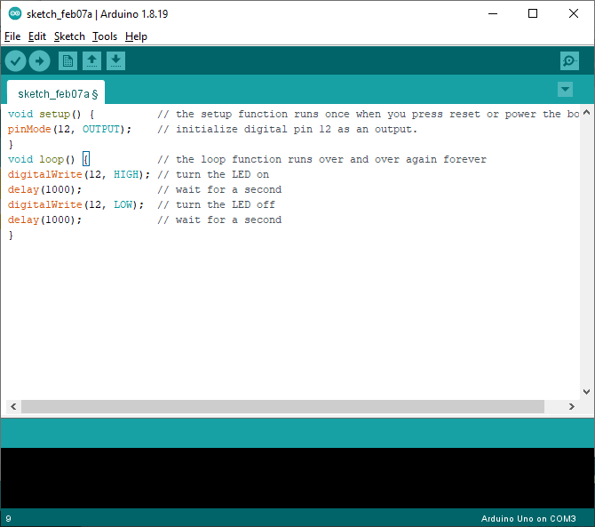
Before you can upload an Arduino sketch, it needs to be saved, so we’ll do that.
Click the “File” menu, then click “Save As…”.
Now choose “This PC” on the left hand side of the window, and then double-click “Documents”.
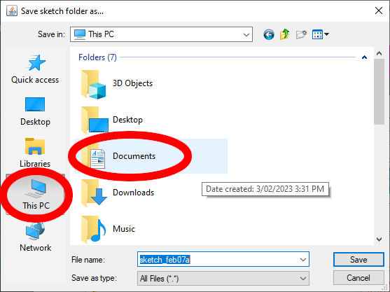
Create a new folder called “Arduino” inside “Documents” by clicking the icon of a folder with a star near the top right of the window.
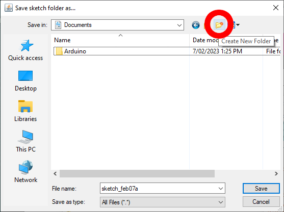
Double-click the Arduino folder that you just made.
Now name your file “C1-upload” and click the “Save” button.
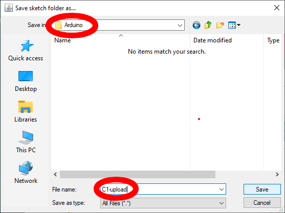
Now go back to your Arduino window and select the whole program.
You can do this quickly by typing Control-A.
Upload the program
Now you need to connect your Arduino board to the computer. Check that the power light on the ThinkerShield is on.
Tell the Arduino IDE which “port” to use to talk to the Arduino.
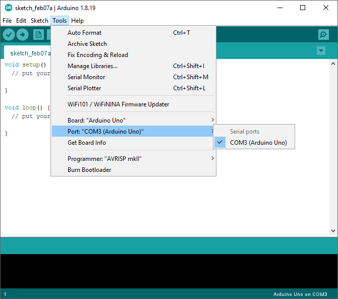
But Sir, I don’t have COM3 like you do.
That’s OK. Just choose the highest numbered COM port. If it doesn’t work, come back here and try the next number.
Click the upload button at the top right of the Arduino IDE.
The Arduino IDE will build the sketch, and the upload it to the Arduino.
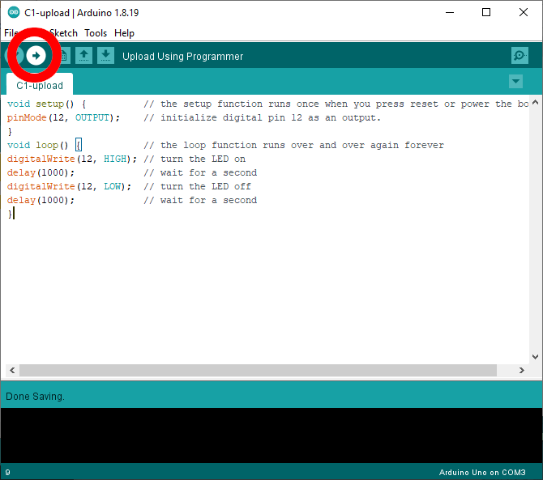
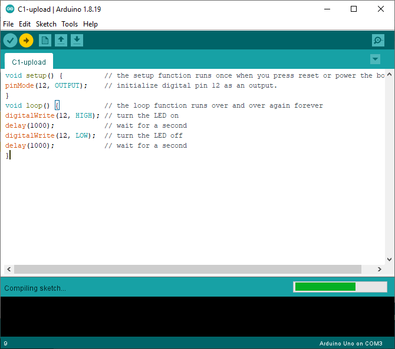
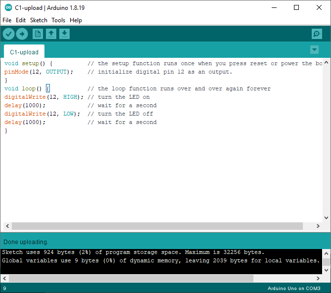
There’s a green light flashing on the ThinkerShield!
Congratulations. You have uploaded a sketch to the Arduino.
Fill out an activity claim slip. Use the code C1. Make sure that I see your Arduino IDE and blinking Arduino, so that I knows you got it to work.
Also put your saved Arduino sketch into the Google Drive folder I asked you to make in activity T1. Make sure it’s named “C1-upload”.